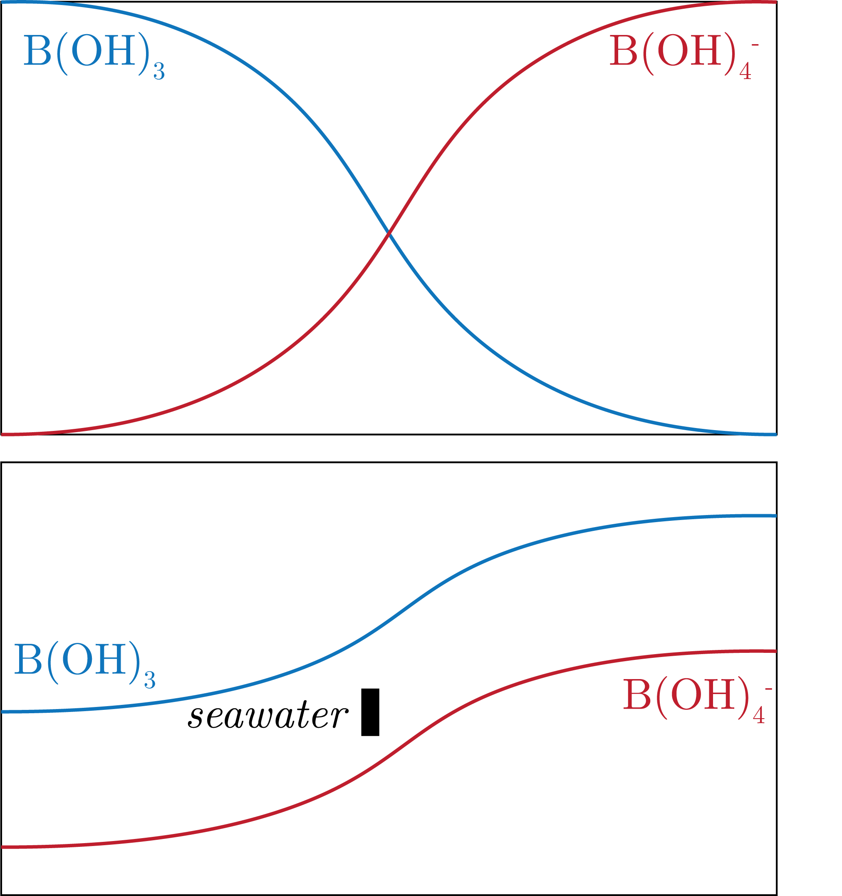
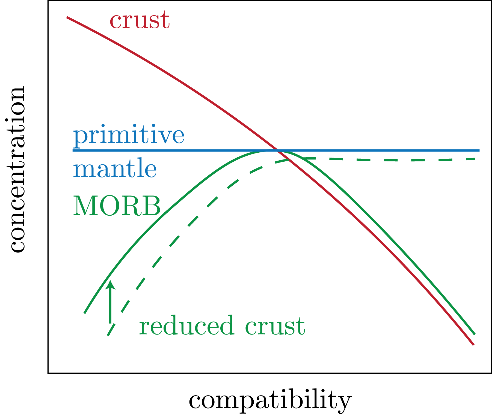
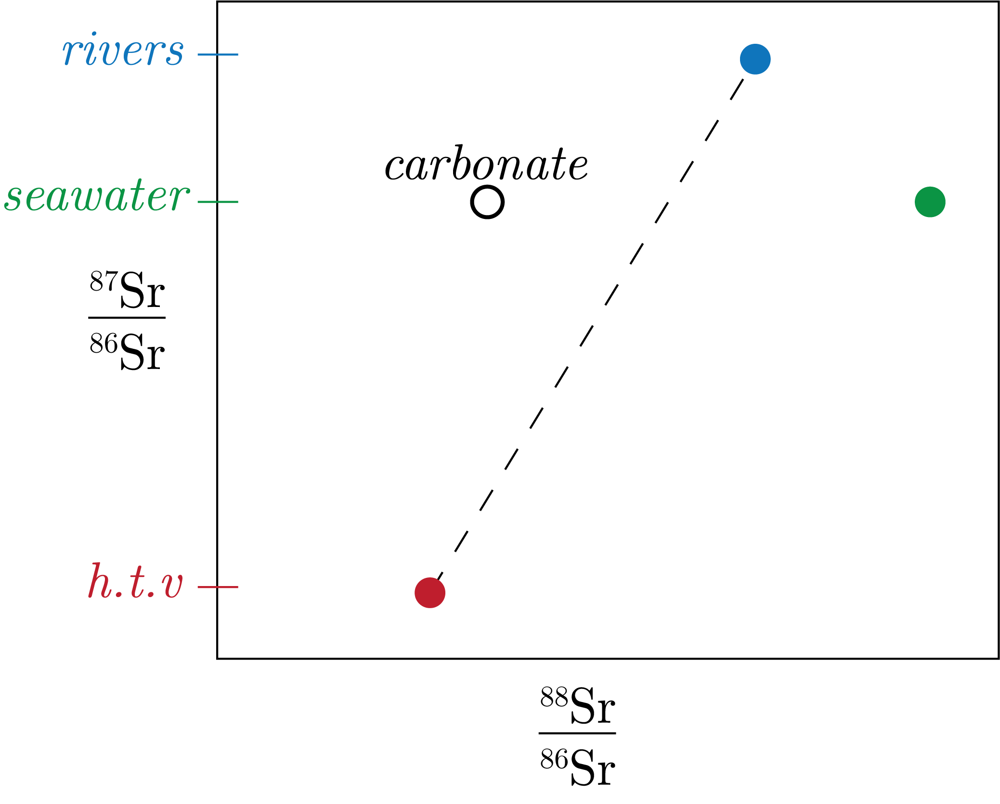
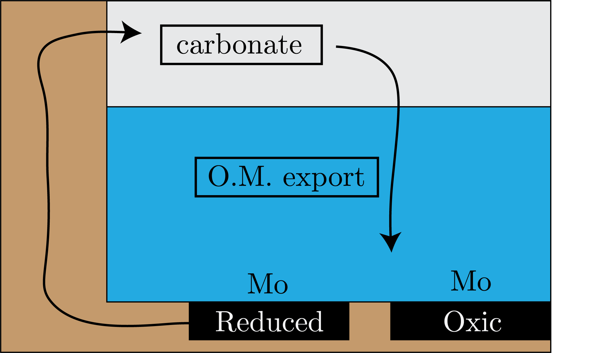
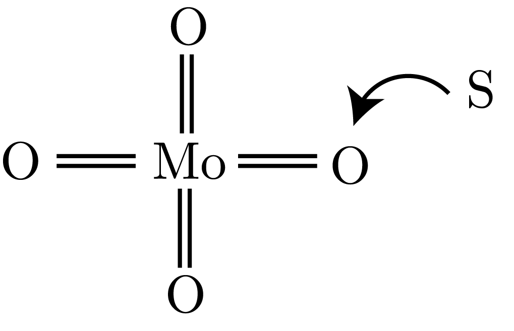

We have seen, with the development and proliferation of Inductively Coupled Plasma Mass Spectrometry (ICP-MS), massive development in developing these isotope systems.
From our Qualitative Rules of Equilibrium Isotope Fractionation, we note that the mass fractionation scales inversely with mass.
We now look at an example case.
Boron – a Return
Boric acid has a lower coordination number, has stronger bonds with O, and therefore has a stronger affinity to fractionate.
This is to say that heavy isotopes are concentrated in substances where that element forms the stiffest bonds (i.e., a lower coordination number).
We can think of this as a high spring constant, meaning short, strong chemical bonds.
We plot this, comparing Boric Acid with Borate, in Fig. 1.

Fig. 1: A comparison of boron ions.
See Valier's lecture on Boron for more information.
Strontium – another Return
First, we remeber that: $^{87}Rb \to \: ^{87}Sr$ by $\beta^-$
We consider the diagram in Fig. 2.

Fig. 2: Reason for Rb being higher in rivers.
We note that the reduced crust is below the MORB, therefore there is less Rb in the oceans than in the rivers, so we have that the ratio of Sr to Rb isotopes that we are interest in will be higher in the rivers than in the ocean. Importantly, Rb has a half life of about 49 billion years.
Now, we can use a mixing equation to get the respect mixing for the river $r$ and the ocean $o$ for this system:
\begin{equation}
\left[Sr\right] = a\left[Sr\right]_o + b\left[Sr\right]_r.
\end{equation}
We note that it is linear mixing mixing, as we have the same isotope in the denominator so that it progresses 1:1 and not with some other gradient.
However, we find that this is note the case, and we see that there needs to be some isotope fractionation effect that causes the seatwater water to be greater than the expected linear mixing.
We can see this is Fig. 3, where we note that $\Delta_x m = 2$ and $\Delta_y m = 1$.

Fig. 3: Sr-Sr system.
So, our mixing equation becomes:
\begin{equation}
\left[Sr\right] = a\left[Sr\right]_o + b\left[Sr\right]_r - c\left[Sr\right]_c.
\end{equation}
Molybdenum – a New System!
We can view the Mo system as in Fig. 4.

Fig. 4: The Mo system that we are thinking about.
We can think of this as a box model:
\begin{equation}
F_{in}\delta_{in} = F_{oxic}\delta_{oxic} + F_{anoxic}\delta_{anoxic},
\end{equation}
where we have that the anoxic is heavy, because the removal of Mo from solution is quantitative, meaning that the pore waters in the sediment will be the ultimate source of Mo.
Basically, what we see is that there is a step-wise addition of S that replaces the O in the Mo-O compound, which then makes it so that unless we are in a complete euxinic environemtn, it is harder to get a handle on the actual oxygenation state of seawater.
We can see a schematic of this in Fig. 5.

Fig. 5: The formation of thiomolybdates.
What this means then is that the ligands are changing, as O is being replaced with the weak ligand S, and these compounds become more particle reactive.
This all happens in the sediments, and we see that with these stepwise actions, we get decreasing effects (intermediate) from isotope fractionation.